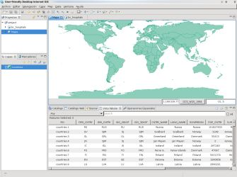
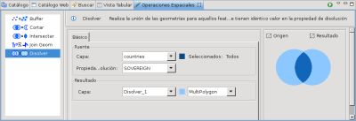
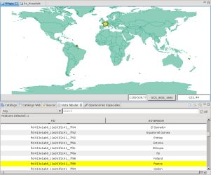

Operación Disolver
Crea una nueva capa que contenga los Features agrupados y fusionados por la Propiedad seleccionada.
Esta operación trabaja tanto con Features seleccionados manualmente o todos los Features contenidos en la Capa seleccionada por defecto.

Ejemplo de uso
Ir a la Vista de Operaciones Espaciales, y seleccionar Disolver de la lista desplegable de Operaciones.
Se mostrarán las opciones de entrada específicas de la operación Disolver.
- Seleccionar la Capa Fuente: En la lista desplegable de Capa, seleccionar la Capa que desea Disolver. Por defecto, la Capa seleccionada actualmente en la Vista de Capas será elegida.
- Seleccionar la Propiedad de Disolución: En la lista desplegable de Propiedad de Disolución, seleccionar la Propiedad del Feature a ser utilizada para Disolver la capa.
- Seleccionar la Capa Resultado: En el cuadro de Capa Resultado, seleccionar el nombre de la Capa que se desea crear para contener el resultado de la Operación Disolver. Se propondrá un nombre por defecto para dicha Capa.

- Realizar la operación: Pulse el botón Ejecutar en la barra de herramientas de la Vista y la operación comenzará.
El resultado será algo parecido a esto:

(c) Copyright (c) 2004-2008 Refractions Research Inc. and others.
{kind=link}
{kind=link}
{kind=link}